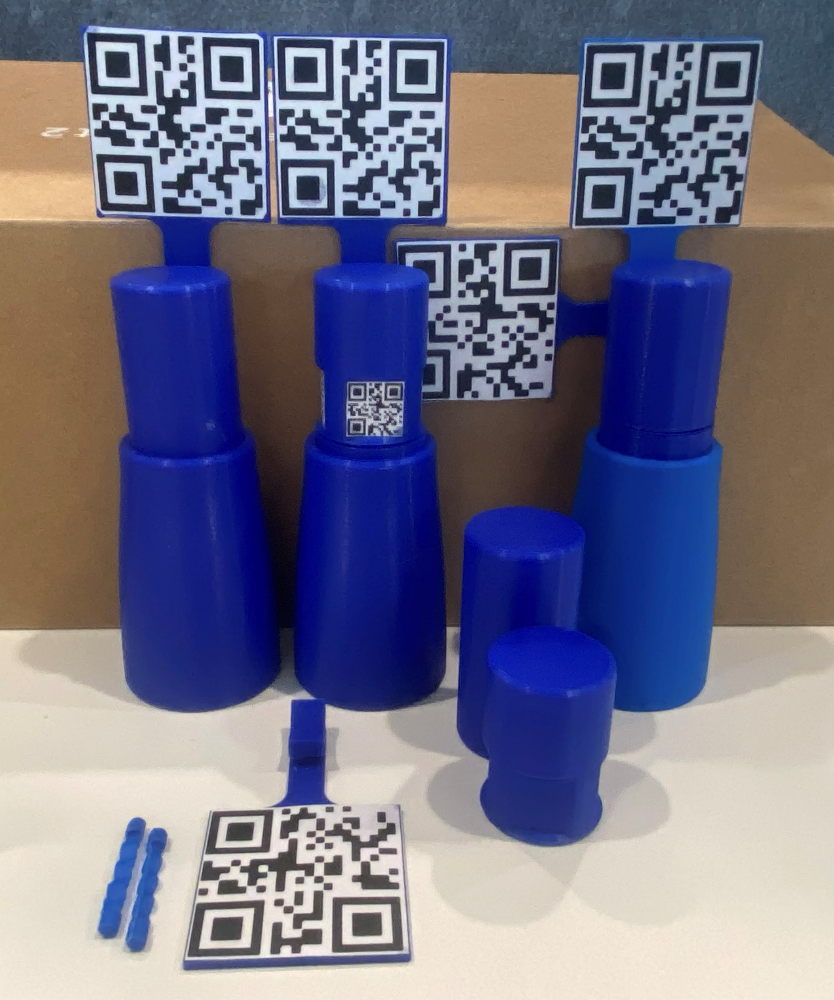
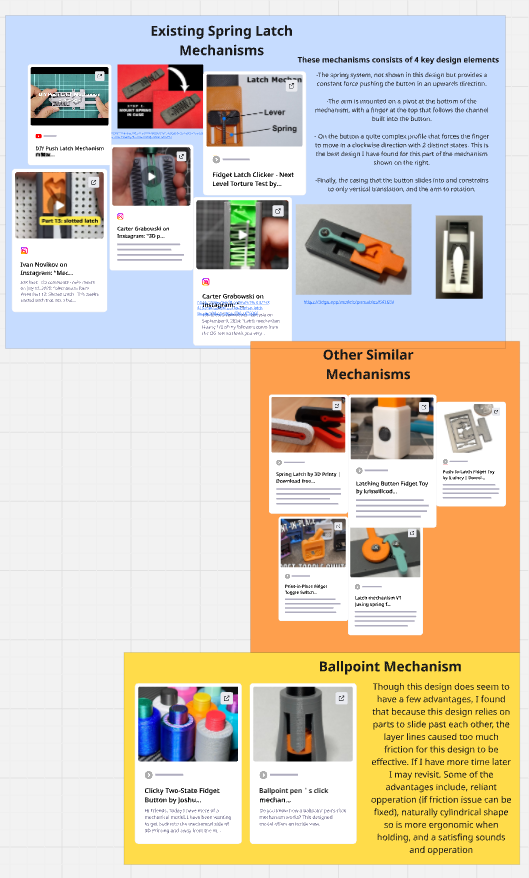
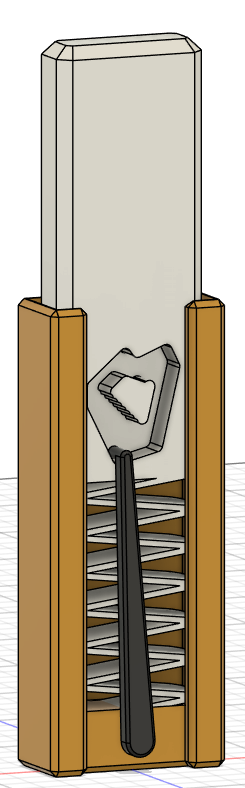
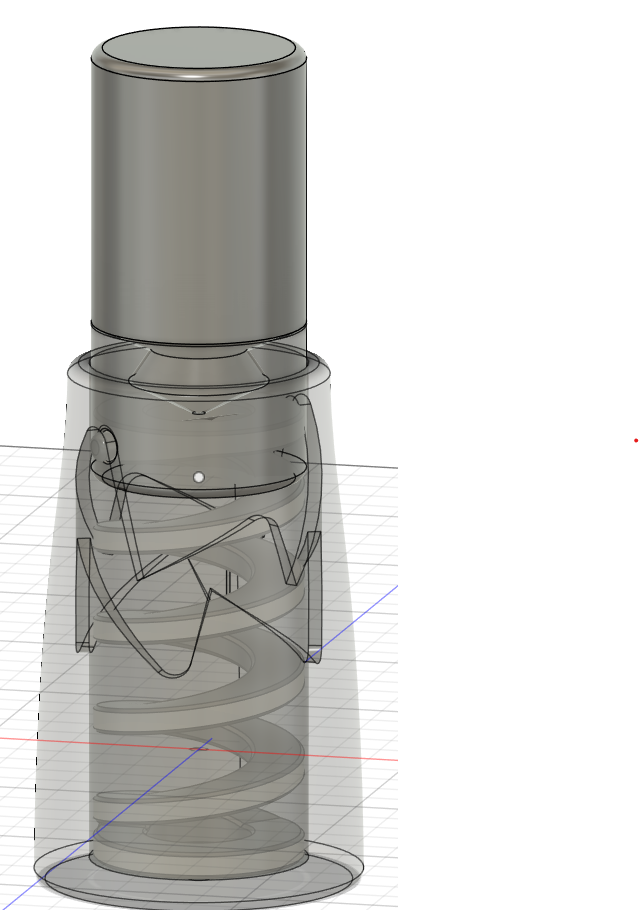
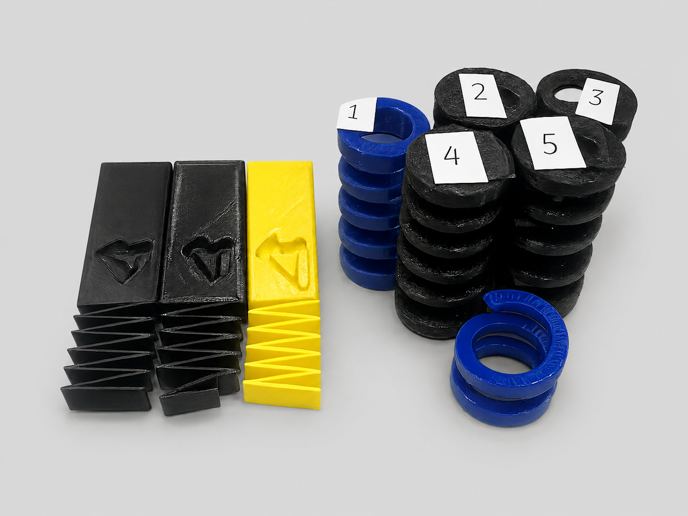
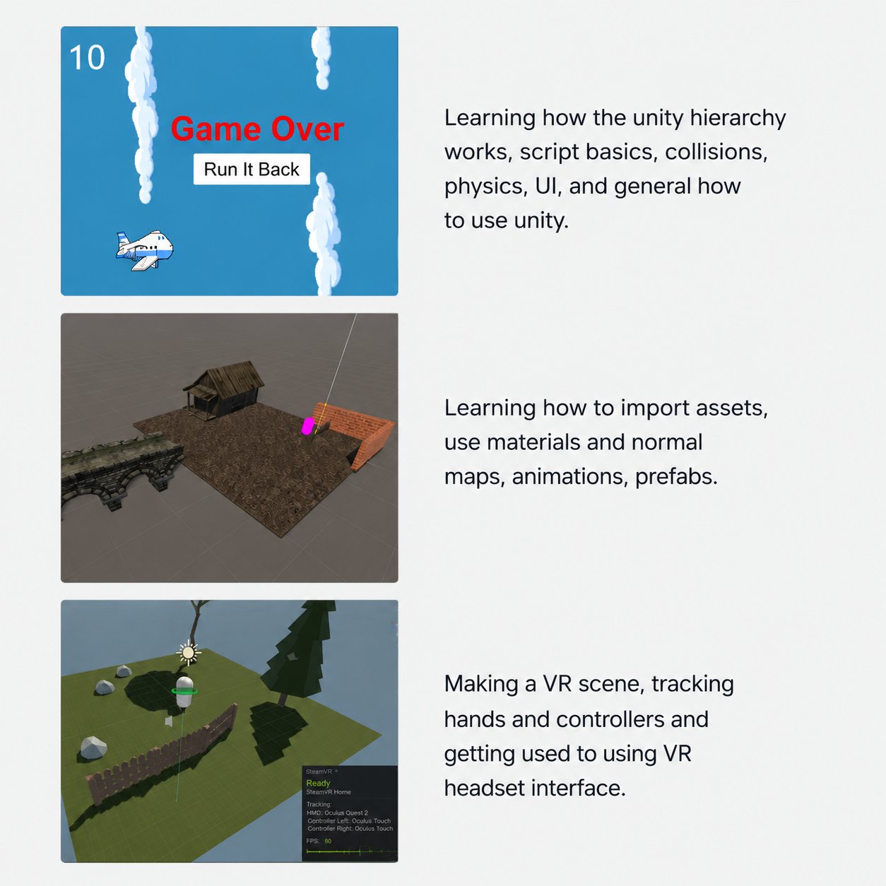

Designing for 3D Printing
Clearances that appeared suitable in CAD did not always behave the same way once printed. Layer lines, surface finish, friction and small dimensional errors all affected the movement of the mechanism.
A research project combining mechanical design, iterative 3D-printed prototyping, Unity development and mixed reality tracking.
During my time at the Human Interface Technology Lab, I worked on the design and development of a physical latching button mechanism intended for mixed reality interaction.
The project combined mechanical prototyping with Unity development. My work involved researching existing latching mechanisms, designing and 3D printing my own mechanism, learning Unity fundamentals, and beginning to track the physical design inside a mixed reality environment.

Final 3D-printed button prototypes developed during the project.
The first stage involved researching existing latching and push-push button mechanisms. I investigated how different designs achieved state changes, how they could be manufactured, and which concepts were realistic to prototype using 3D printing.
This phase helped define the design direction before I began developing my own mechanism. I used existing examples, printed test pieces and idea mapping to identify the most practical approach.

Research and concept development for potential latching mechanism designs.
The initial mechanism was designed in Onshape to quickly test the basic geometry and understand how the moving components would interact.
I then moved to Autodesk Fusion to develop the design more robustly using a parametric workflow. This made it easier to adjust clearances, tolerances, spring positions and overall dimensions as the mechanism evolved.


Development from the initial concept toward the improved cylindrical mechanism.
One of the key design improvements was moving toward a cylindrical form. This made the mechanism more ergonomic to hold and reduced the effect of gravity and orientation on its behaviour.

Development of the spring arrangement and internal button behaviour.
The spring system was a critical part of the design. It controlled how the button moved, returned and latched between its two states.
This required testing the interaction between printed geometry, spring force, friction and clearances. Small tolerance changes had a noticeable effect on whether the mechanism moved smoothly or became bound.
The geometry and spring arrangement were refined together rather than treated as independent parts, allowing the overall feel and reliability of the mechanism to improve with each iteration.
The mechanism was developed through repeated 3D printing, assembly and physical testing. Each version revealed new issues involving tolerances, friction, ergonomics or printability.
Clearances that appeared suitable in CAD did not always behave the same way once printed. Layer lines, surface finish, friction and small dimensional errors all affected the movement of the mechanism.
The mechanism needed to be functional, comfortable and intuitive. Its shape, travel, spring force and latching behaviour therefore had to be considered together.
A major part of the project was learning Unity and using it to connect the physical mechanism with a digital mixed reality environment.
This involved learning the Unity hierarchy, writing scripts in C#, working with prefabs, importing and using the Meta SDK, setting up player and camera behaviour, and experimenting with animations.
This gave me experience working outside my usual mechanical and embedded development environments and required me to understand how a physical device could be represented within interactive software.

Unity development used to begin integrating the physical mechanism with a mixed reality environment.
Once the mechanism had been designed and printed, the next stage was tracking it inside Unity. The goal was to create a connection between the physical object and its digital representation.
This introduced a different set of challenges from the mechanical design work. I had to consider how the object would be recognised, tracked and accurately represented within a mixed reality environment.
Tracking test used to represent the physical mechanism inside Unity.
By the end of the project, I had taken the mechanism from early research and concept development through to a functional physical prototype and its initial integration into a mixed reality environment.
Future development would involve improving the tracking method, resolving the remaining Unity-side issues and adding functionality that allows Unity to identify the physical state of the mechanism.
This project broadened my understanding of mechatronics beyond traditional robotics and UAV work. It required mechanical design, additive manufacturing, user-interaction thinking, software development and mixed reality integration.
The biggest lesson was that physical-digital interaction requires both effective mechanical design and careful software integration. A mechanism can work well physically, but further consideration is required for it to operate effectively as part of an interactive mixed reality system.